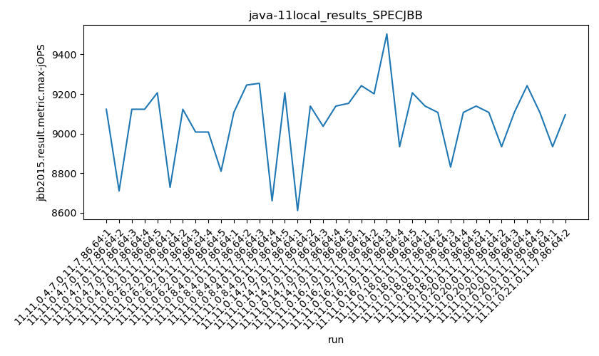
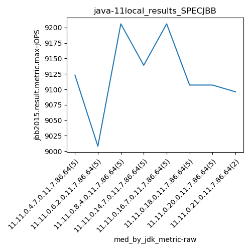
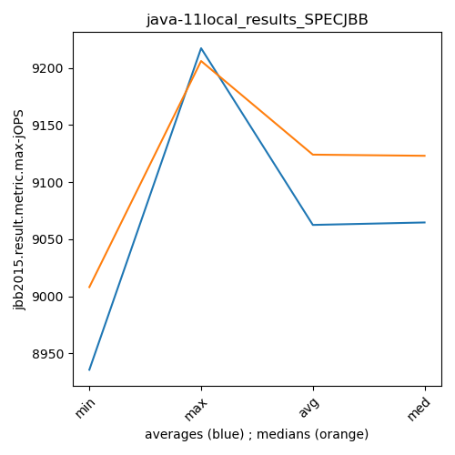
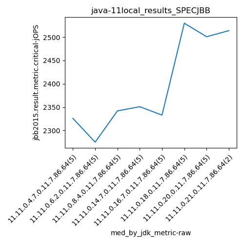
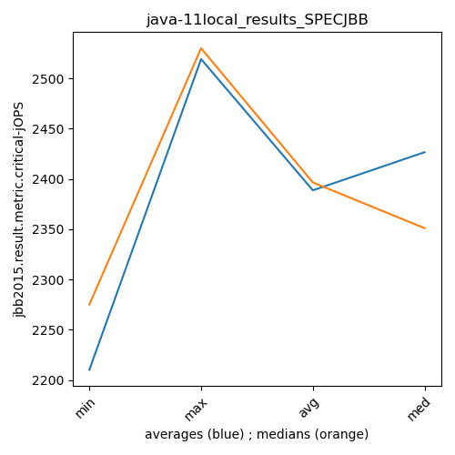

java-11 SPECJBB
Context at bottom
/home/jvanek/git/benchmarks-in-nested-virtualisation-toolchain/final_results/local_results/local_results_J2DBENCH
java-11
SPECJBB
/home/jvanek/git/benchmarks-in-nested-virtualisation-toolchain/final_results/local_results/local_results_SPECJBB
java-11
SPECJBB
local_results_SPECJBB
- local_results_SPECJBB - max-jops
- local_results_SPECJBB - critical jops
local_results_SPECJBB - max-jops
Expected number of java-11 JDKs: 11
1st avgmed_alljdks_metric:
/home/jvanek/git/benchmarks-in-nested-virtualisation-toolchain/final_results/result_processing.py /home/jvanek/git/benchmarks-in-nested-virtualisation-toolchain/final_results/local_results/local_results_SPECJBB jbb2015.result.metric.max-jOPS False
values: [9123, 8711, 9123, 9123, 9206, 8729, 9123, 9008, 9008, 8810, 9107, 9245, 9254, 8661, 9206, 8612, 9139, 9037, 9139, 9153, 9242, 9201, 9503, 8934, 9206, 9139, 9107, 8831, 9107, 9139, 9107, 8934, 9107, 9242, 9107, 8934, 9096]

Expected number of iterations: 5
final number of values: 37 out of 55
Pass rate: 67.3%
values: (8612, 9503, 9066.297297297297, 9107)

** accuracy from all jdks and runs
more is better
MIN: 8612
MAX: 9503
AVG: 9066.297297297297
MED: 9107
Relative differences 1:
MIN-MAX: 9.0 %
MIN-AVG: 5.0 %
MIN-MED: 5.0 %
MAX-MIN: -10.0 %
MAX-AVG: -5.0 %
MAX-MED: -4.0 %
AVG-MED: 0.0 %
stored to java-11.properties. sort | uniq that!
2nd avgmed_by_jdk_metric:
values: [9057.2, 8935.6, 9094.6, 9016.0, 9217.2, 9064.6, 9099.4, 9015.0]

values: [9123, 9008, 9206, 9139, 9206, 9107, 9107, 9096]

values: (8935.6, 9217.2, 9062.45, 9064.6)
values: (9008, 9206, 9124.0, 9123)

** accuracy from all jdks where runs were avged
more is better
MIN: 8935.6
MAX: 9217.2
AVG: 9062.45
MED: 9064.6
Relative differences 1:
MIN-MAX: 3.0 %
MIN-AVG: 1.0 %
MIN-MED: 1.0 %
MAX-MIN: -3.0 %
MAX-AVG: -2.0 %
MAX-MED: -2.0 %
AVG-MED: 0.0 %
stored to java-11.properties. sort | uniq that!
** accuracy from all jdks where runs were medianed
more is better
MIN: 9008
MAX: 9206
AVG: 9124.0
MED: 9123
Relative differences 1:
MIN-MAX: 2.0 %
MIN-AVG: 1.0 %
MIN-MED: 1.0 %
MAX-MIN: -2.0 %
MAX-AVG: -1.0 %
MAX-MED: -1.0 %
AVG-MED: -0.0 %
stored to java-11.properties. sort | uniq that!
local_results_SPECJBB - critical jops
Expected number of java-11 JDKs: 11
1st avgmed_alljdks_metric:
/home/jvanek/git/benchmarks-in-nested-virtualisation-toolchain/final_results/result_processing.py /home/jvanek/git/benchmarks-in-nested-virtualisation-toolchain/final_results/local_results/local_results_SPECJBB jbb2015.result.metric.critical-jOPS False
values: [2497, 2342, 2136, 1988, 2326, 2237, 1957, 2275, 2297, 2285, 2426, 2342, 2438, 2315, 2064, 2647, 2351, 2251, 2641, 2243, 2333, 2625, 2213, 2206, 2540, 2530, 2578, 2518, 2755, 2215, 2640, 2599, 2486, 2501, 2180, 2514, 2514]

Expected number of iterations: 5
final number of values: 37 out of 55
Pass rate: 67.3%
values: (1957, 2755, 2378.5135135135133, 2342)

** accuracy from all jdks and runs
more is better
MIN: 1957
MAX: 2755
AVG: 2378.5135135135133
MED: 2342
Relative differences 1:
MIN-MAX: 29.0 %
MIN-AVG: 18.0 %
MIN-MED: 16.0 %
MAX-MIN: -41.0 %
MAX-AVG: -16.0 %
MAX-MED: -18.0 %
AVG-MED: -2.0 %
stored to java-11.properties. sort | uniq that!
2nd avgmed_by_jdk_metric:
values: [2257.8, 2210.2, 2317.0, 2426.6, 2383.4, 2519.2, 2481.2, 2514.0]

values: [2326, 2275, 2342, 2351, 2333, 2530, 2501, 2514]

values: (2210.2, 2519.2, 2388.675, 2426.6)
values: (2275, 2530, 2396.5, 2351)

** accuracy from all jdks where runs were avged
more is better
MIN: 2210.2
MAX: 2519.2
AVG: 2388.675
MED: 2426.6
Relative differences 1:
MIN-MAX: 12.0 %
MIN-AVG: 7.0 %
MIN-MED: 9.0 %
MAX-MIN: -14.0 %
MAX-AVG: -5.0 %
MAX-MED: -4.0 %
AVG-MED: 2.0 %
stored to java-11.properties. sort | uniq that!
** accuracy from all jdks where runs were medianed
more is better
MIN: 2275
MAX: 2530
AVG: 2396.5
MED: 2351
Relative differences 1:
MIN-MAX: 10.0 %
MIN-AVG: 5.0 %
MIN-MED: 3.0 %
MAX-MIN: -11.0 %
MAX-AVG: -6.0 %
MAX-MED: -8.0 %
AVG-MED: -2.0 %
stored to java-11.properties. sort | uniq that!
/home/jvanek/git/benchmarks-in-nested-virtualisation-toolchain/final_results/local_results/local_results_RADARGUNs1
java-11
SPECJBB
/home/jvanek/git/benchmarks-in-nested-virtualisation-toolchain/final_results/local_results/local_results_RADARGUNs3
java-11
SPECJBB
/home/jvanek/git/benchmarks-in-nested-virtualisation-toolchain/final_results/local_results/local_results_JMH
java-11
SPECJBB
/home/jvanek/git/benchmarks-in-nested-virtualisation-toolchain/final_results/local_results/local_results_DACAPO
java-11
SPECJBB
pass rates:
local_results_SPECJBB=67.3%
Context:
- local_results
- SPECJBB